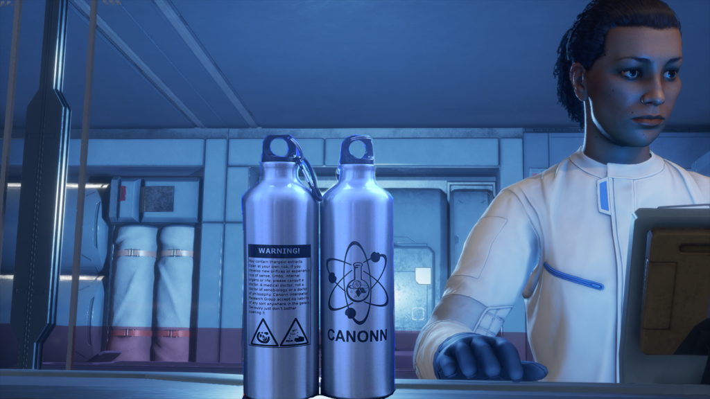
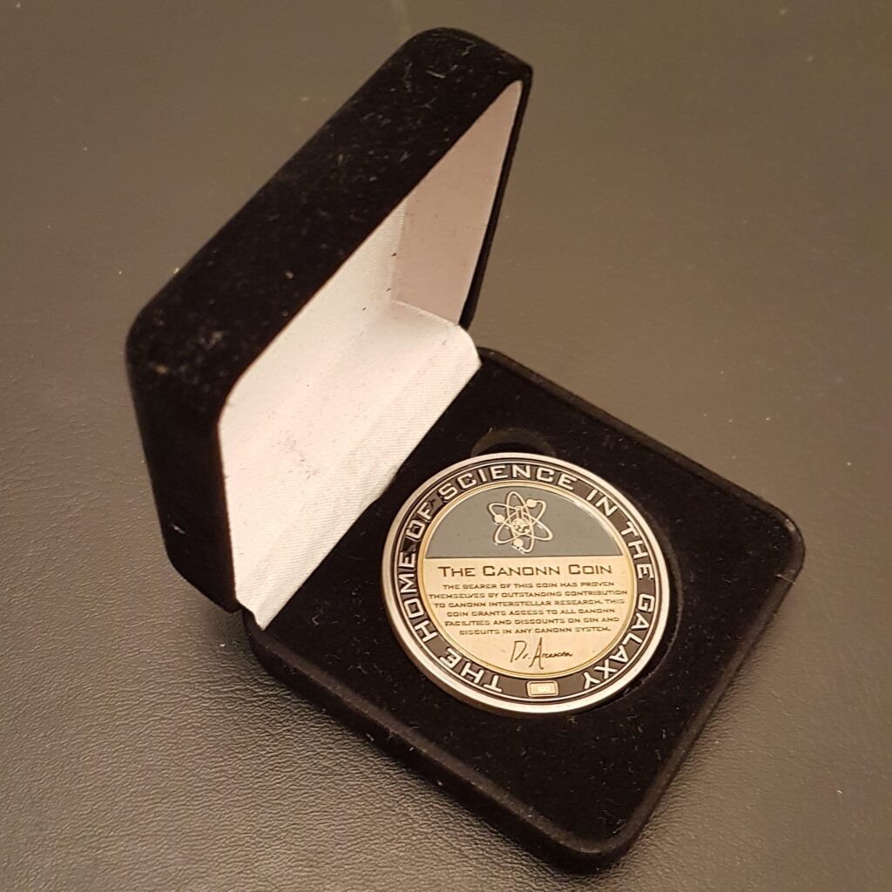

In the Inner Orion Spur, about 300 light years from Sol, Tucanae Sector AF-A d71 4 e is a 1000km radius rocky body, with a thin Carbon Dioxide Atmosphere, that supports 9 different life forms. Worth a modest 2,093,600 credits at Vista Genomics, the system was visited by CMDR Yanosh who analysed all the biology in a leisurely 20,264 seconds or 5 Hours 37 minutes and 44 seconds.
Your task is to beat that record in as short a time as possible. The fastest time to perform three scans of a single species at the time of writing is 49 seconds, so we would expect the winner to complete all nine scans in less than 25 minutes and must sell their data at the local Vista Genomics so that they cannot make a second attempt.
Don’t worry if you are unable to enter the competition at this time because of hardware issues. We will be re-running the competition on the same body in the future when all commanders have an opportunity to join in. So you will be able to take part in the future when your ships are capable of planetary landings. Commanders who have already attempted the run will be unable to take part a second time.
Clearly the winners will be the commanders who put the most effort into planning their run, but if you just want to enter casually, we have a leaderboard below using data gathered from your journals from any of our telemetry options.
It is not compulsory to use EDMC-Canonn, EDD-Canonn or Journal-Limpet but if you would like to see your name on the leader-board please consider installing and using these tools as we cannot manually upload your data.
Please read and understand the rules carefully. If you have any questions please ask on the Canonn Discord or Twitter.
What? There are prizes? It had better not be coming out of my budget! The prizes are really very nice indeed. While there is no fee for entering the competition perhaps you might consider donating some credits on our donation page .
The first three places will be awarded one of our fabulous 70cl thargoid sample flasks that they will be able to use at their own risk if they don’t mind really bad things happening in their digestive tract.

Additionally the commander in first place will be awarded The Canonn Coin, designed by Sovereign Winter, forged from actual metal and bearing Dr Arcanonn’s signature. It is not only one of the coolest things in the Galaxy it is uniquely numbered and grants you free gin and biscuits anywhere in Canonn space.

There is a variety of biology, some of which will be easy to find and others will be harder. If you wish to get the fastest time, then you would be advised to plan a route and practice your run before using your organic scanner. Remember to look in the codex to see what the genetic diversity ranges are for each of the species.
NB: Do not use your organic scanner until you are ready to start as the timer will start ticking from that moment.
You may want to do some research such as mapping the terrain that gives the best overlap between species to minimise traveling time. Please consider writing up your research into a paper that we can publish on this web site.
The leaderboard will show up to 100 commander’s times. Please note that this does not take into account whether data has been sold (at this time)
You can view more statistics on our speadsheet (updated hourly)